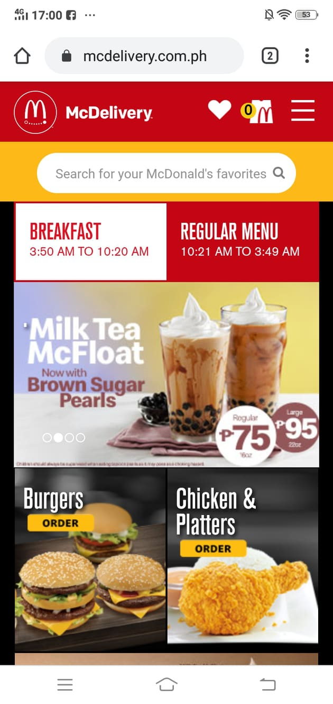
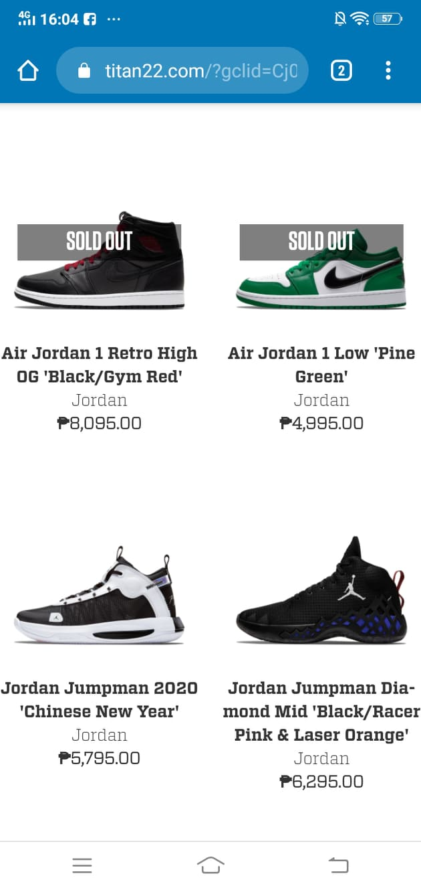
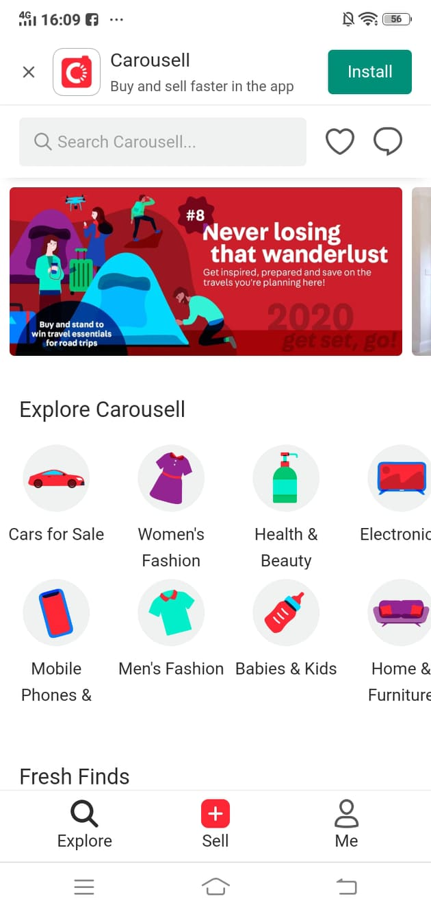

Visual Hierarchy - Mcdonald's website
Mcdonald's website show good visual hierarchy by putting visual emphasis on their specials. Right now they have a special on Milk Tea, this is emphasized by putting the product front and center.
White Space and Clean Design - Titan22 website
The page is designed cleanly and with adequate white space so the customers viewing the website can just focus on the site's most important content, it shoes. The white spaces also allow the customer to get a good look of each shoe without any distractions.
ARC: Alignment - Carousell
You can observe good allignment on the Carousell webpage The Explore Carousell section on their website has icons that are alligned properly. It's easier to browse to the icons and get to the right part of the site you wanted to go to.